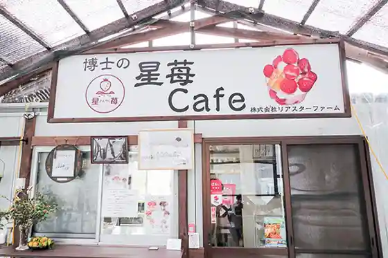
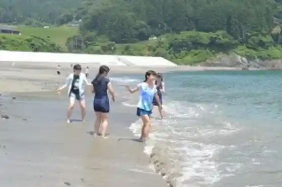
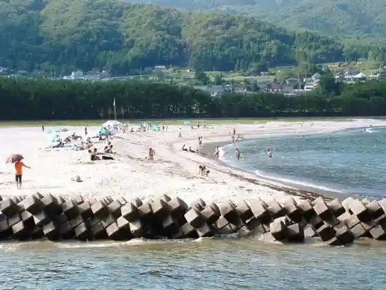
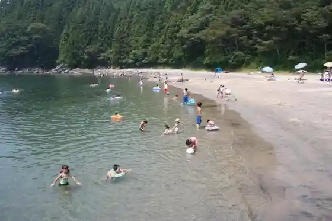

Riasuta Farm
Ofunato, Iwate · 0192-22-7145 · Official / source link

Ryori Beach
Ofunato, Iwate · 0192-27-3111 · Official / source link

Yoshihama Beach
Ofunato, Iwate · 0192-27-3111 · Official / source link

Okirai Nami Ita Beach
Ofunato, Iwate · 0192-27-3111 · Official / source link

Noka Resutoran Aji Dokoro Yasumiishi (Yasumiishi)
Ofunato, Iwate · 0192-28-2016 · Official / source link
Umi no Sachi Furumai Center
Ofunato, Iwate · 0192-22-8310 · Official / source link
Ofunato Sanmara Men
Ofunato, Iwate · 0192-29-2121 · Official / source link
Sanriku Wakame
Ofunato, Iwate · 0192-21-1922 · Official / source link
Kippin'awabi
Ofunato, Iwate · 0192-45-2151 · Official / source link
Eisaku Ame
Ofunato, Iwate · 0192-42-3051 · Official / source link
Kamome no Tamago
Ofunato, Iwate · 0192-26-2222 · Official / source link
Shakunage no Yu Kko (Higaeri Nyuyoku Shisetsu)
Ofunato, Iwate · 0192-22-5400 · Official / source link
Benten So
Ofunato, Iwate · 0192-45-2503 · Official / source link
Natsu Mushi no O Yu Kko
Ofunato, Iwate · 0192-44-2600 · Official / source link
Chiisa Nao Yado Hana Temari
Ofunato, Iwate · 0192-27-3455 · Official / source link
Kamome Terasu
Ofunato, Iwate · 0192-27-3135 · Official / source link
Jizake Suisen
Ofunato, Iwate · 0192-47-4130 · Official / source link
Ryoshi no Kaki Koya
Ofunato, Iwate · 0192-26-4788 · Official / source link
Yoshihama no Suneka
Ofunato, Iwate · 0192-27-3111 · Official / source link
Koishi Hama Hotatebaga
Ofunato, Iwate · 090-2953-0997 · Official / source link
Koishi Hama Hotatedekki
Ofunato, Iwate · 0192-47-5375 · Official / source link
Koishi Hama Hotate
Ofunato, Iwate · 0192-42-2151 · Official / source link
San Tetsu Kurepu
Ofunato, Iwate · 090-8780-4744 · Official / source link
Komatsu So
Ofunato, Iwate · 0192-45-2210 · Official / source link
Tsunami Ishi
Ofunato, Iwate · 0192-21-1922 · Official / source link
Sanriku Tetsudo Koishi Hama Eki
Ofunato, Iwate · 0193-62-8900 · Official / source link
Goishi Kaigan Campground
Ofunato, Iwate · 0192-29-2359 · Official / source link
Goishi Rabenda Sono
Ofunato, Iwate · 0192-27-0348 · Official / source link
Goishi Kaigan Adobencha
Ofunato, Iwate · 0192-29-2359 · Official / source link
Goishi Onsen Kairaku So (Kyugyochu)
Ofunato, Iwate · 0192-29-3165 · Official / source link
Koro Kaki
Ofunato, Iwate · 0192-26-5211 · Official / source link
Ofunato Yakatabune (Shiosai (Shiosai))
Ofunato, Iwate · 0192-47-4131 · Official / source link
Ofunato Tsunami Densho Kai
Ofunato, Iwate · Official / source link
Ofunato no Yabutsubaki
Ofunato, Iwate · 0192-27-3111 · Official / source link
Ofunato Sakana Market
Ofunato, Iwate · 0192-26-4112 · Official / source link
Ryori Saki
Ofunato, Iwate · 0192-27-3111 · Official / source link
Ryori Taiken Gen
Ofunato, Iwate · 0192-42-2650 · Official / source link
Sekai no Tsubaki Kan Goishi
Ofunato, Iwate · 0192-29-4187 · Official / source link
Azuma So
Ofunato, Iwate · 0192-44-2228 · Official / source link
Fureai Land Ozaki Misaki
Ofunato, Iwate · 0192-27-4478 · Official / source link
Imaide Yama
Ofunato, Iwate · 0192-27-3111 · Official / source link
Ana Tori Iso
Ofunato, Iwate · 0192-27-3111 · Official / source link
Kobesaki
Ofunato, Iwate · 0192-26-4477 · Official / source link
Okubo Gorge
Ofunato, Iwate · 0192-27-3111 · Official / source link
Goishi Misaki
Ofunato, Iwate · 0192-26-4477 · Official / source link
Sanmen Tsubaki
Ofunato, Iwate · 0192-26-4477 · Official / source link
Goishi Coast
Ofunato, Iwate · 0192-21-1922 · Official / source link
Natsu Mushi Yama
Ofunato, Iwate · 0192-27-3111 · Official / source link
Sanriku Daio Sugi
Ofunato, Iwate · 0192-27-3111 · Official / source link
Tarajigane
Ofunato, Iwate · 0192-27-3111 · Official / source link
Hase Tera no Mokuzo Nyorai Zazo to Mokuzo Juichi Men Kannon Bosatsu Ritsuzo
Ofunato, Iwate · 0192-27-3111 · Official / source link
Fudo Taki
Ofunato, Iwate · 0192-27-3111 · Official / source link
Choan Tera
Ofunato, Iwate · 0192-27-3111 · Official / source link
Tenjin Yama Park
Ofunato, Iwate · 0192-21-1922 · Official / source link
Goishi Kaigan Infomeshon Center
Ofunato, Iwate · 0192-29-2359 · Official / source link
Roadside Station (Sanriku) Sanriku Furusato Bussan Center
Ofunato, Iwate · 0192-44-3241 · Official / source link
Ofunato Ritsu Museum
Ofunato, Iwate · 0192-29-2161 · Official / source link
Okubo Yama Forest Park (Mori no Manabi Sha)
Ofunato, Iwate · 0192-44-3655 · Official / source link
Goyo Yama
Ofunato, Iwate · 0193-22-2111 · Official / source link
Ryu Masa Tera Hijiri Kannon
Ofunato, Iwate · 0192-27-3111 · Official / source link
Ran Baku Tani
Ofunato, Iwate · 0192-27-3111 · Official / source link